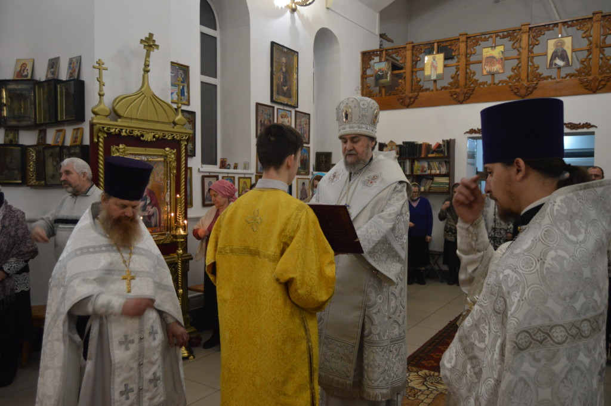
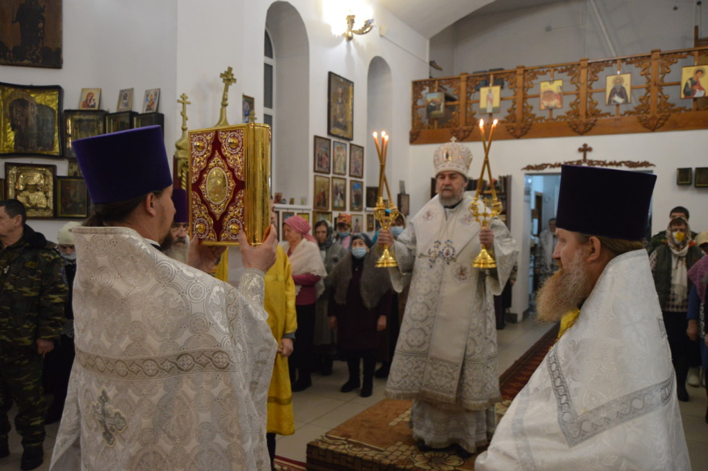
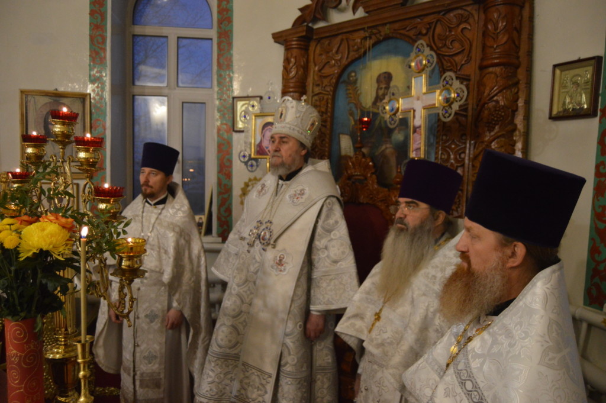
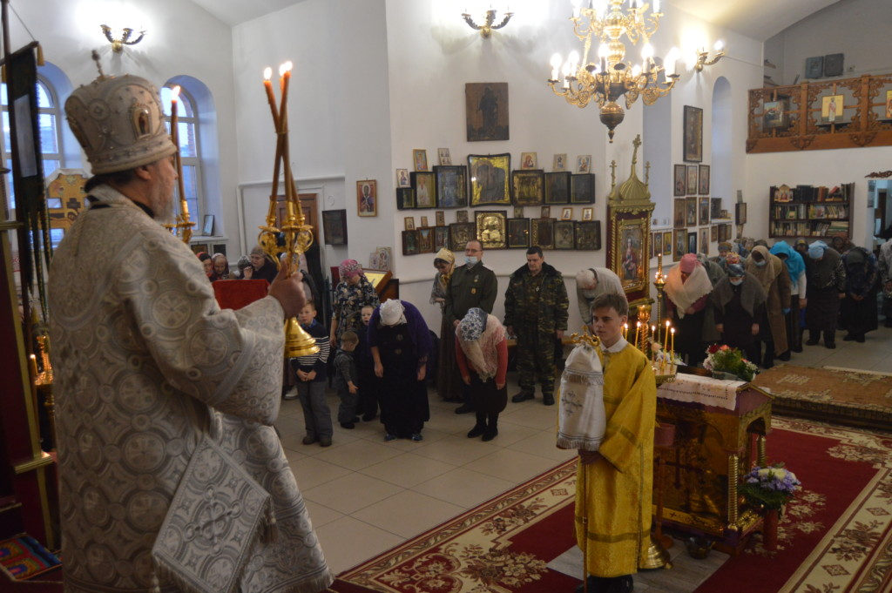

8 января, Его Преосвященство Владыка Всеволод на праздновании Собора Пресвятой Богородицы возглавил Божественную литургию в кафедральном храме в честь Святителя Тихона патриарха Московского и всея Руси города Камня-на-Оби.
Епископу Всеволоду сослужили: благочинный Каменского благочинного округа и настоятель храма протоиерей Николай Гордиенко, иерей Александр Сохарев, иерей Игорь Русаков.
На сугубой ектении были вознесены молитвенные прошения в связи с угрозой распространения коронавирусной инфекции. По сугубой ектении Владыка вознес молитву о милосердии Божием и ограждении от губительного поветрия
По окончании богослужения Его Преосвященство обратился к прихожанам с проповедью, и преподал Архипастырское благословение.
